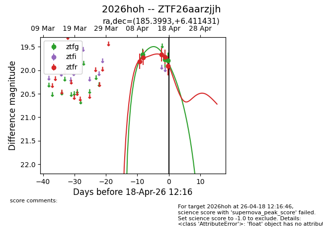
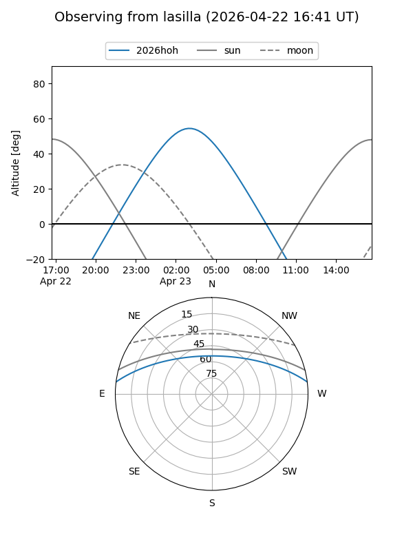
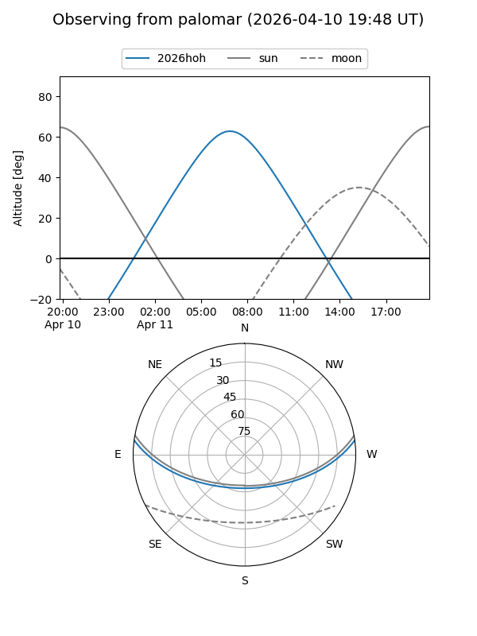
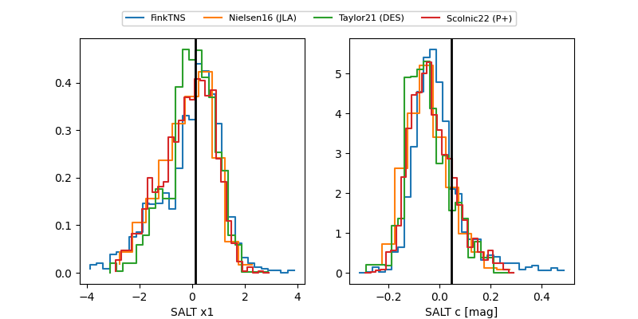

2026hoh
Target 2026hoh at 2026-04-18 12:22
Aliases and brokers:
FINK: link
Lasair: link
ALeRCE: link
TNS: link
YSE: link
alt names
ZTF26aarzjjh (ztf,fink_ztf)
2026hoh (tns,yse)
Coordinates:
equatorial (ra, dec) = 185.3993,+6.41143
equatorial (HMS+DMS) = 12:21:35.84,+06:24:41.15
galactic (l, b) = (282.6913,+68.10271)
Flags:
Photometry:
last ztfg=19.79, ztfr=19.91
3 ztfg, 5 ztfr detections
Lightcurve

Visibility


Additional plots
